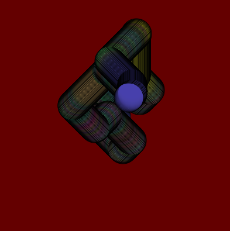
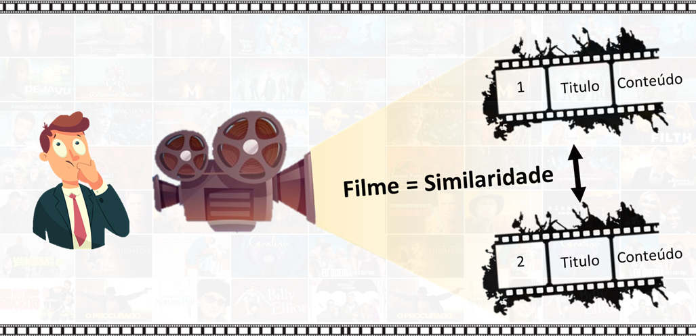
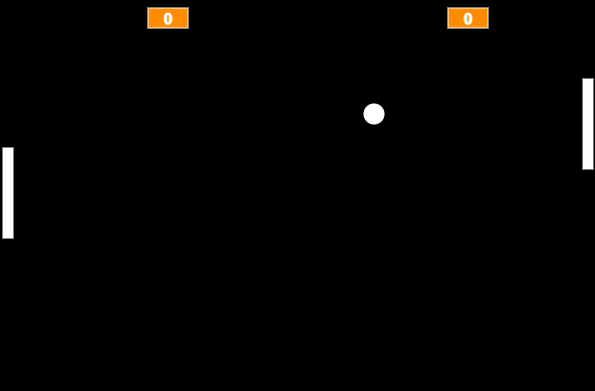

Meus projetos

Circulo Intearito
Esse projeto é ideal para demonstrar domínio em programação criativa, animação interativa e eventos de entrada do usuário, sendo um ótimo complemento visual para aprendizado.

Recomendador de Filmes Interativo
Este projeto mostra como a programação criativa com p5.js pode ser usada para soluções simples, visuais e funcionais, mesmo sem depender de estruturas HTML/CSS tradicionais.

Ping Pong Interativo
Este projeto demonstra habilidades práticas em lógica de programação, interatividade com o usuário, e criação de jogos 2D simples, sendo ideal para aprendizado, exibição ou entretenimento